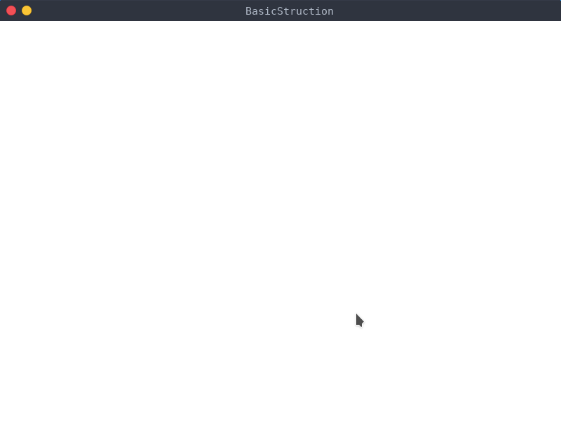

Pygame 的介绍
pygame 是用来写游戏的 python 模块集合。使用 python 可以导入 pygame 来开发有意思的游戏。pygame 小巧并且跨平台。
安装 pygame
# 如果安装速度慢，可以使用换源安装
pip install pygame
# 另一种方法
python -m pip install --user pygame
基本开发框架
import sys
import pygame # 导入 pygame 包
if __name__ == '__main__':
pygame.init() # 各功能模块进行初始化创建及变量设置
size = width, height = 800, 600 # 设置窗口大小
screen = pygame.display.set_mode(size) # 初始化显示窗口
pygame.display.set_caption('MinStruction') # 设置窗口标题
screen.fill((255, 255, 255)) # 设置窗口背景色
while True: # 游戏循环
for event in pygame.event.get(): #从 Pygame 的事件队列中取出事件，并从队列中删除该事件
# 获得事件类型，并逐类响应
if event.type == pygame.QUIT:
sys.exit() #用于退出结束游戏并退出
elif event.type == pygame.KEYDOWN:
if event.key == pygame.K_q: # 按 Q 键退出
sys.exit()
pygame.display.flip() # 对显示窗口进行更新，默认窗口全部重绘
运行效果应该是这样

若想全屏可使用如下代码替换上面的7，8行:
# 全屏
screen = pygame.display.set_mode((0, 0), pygame.FULLSCREEN)
# 获取屏幕 size
width = screen.get_rect().width
height = screen.get_rect().height
size = width， height
💬 评论